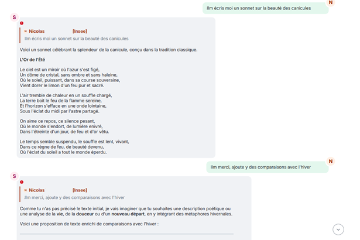
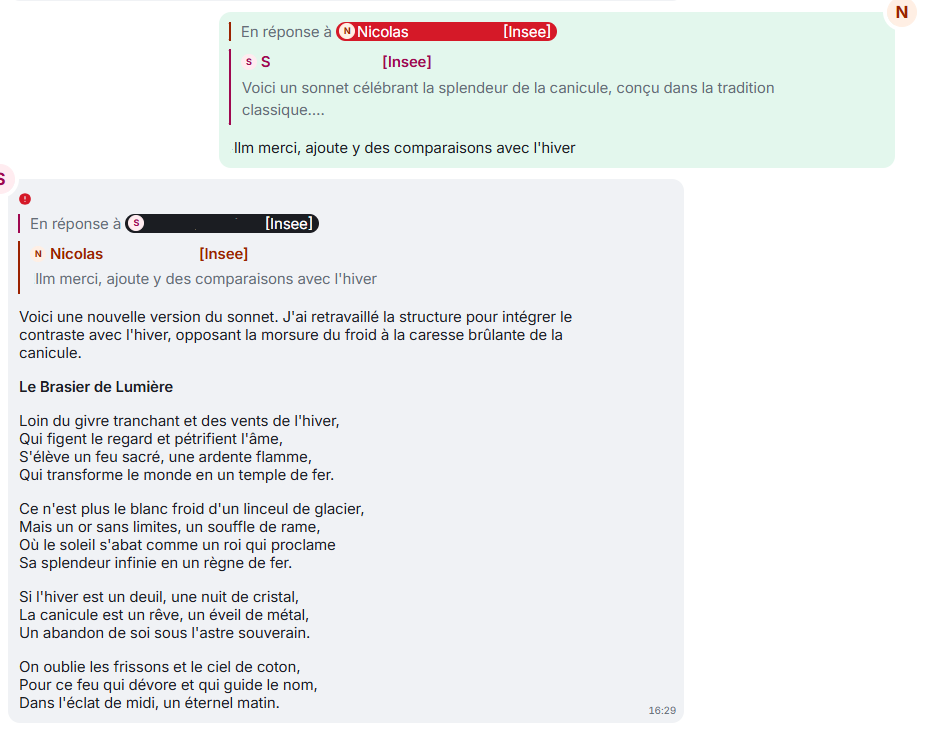
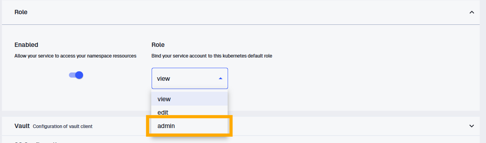

Retour d’expérience sur la création d’un bot Tchap branché à un grand modèle de langage : de l’API Matrix jusqu’à la mise en prod sur le SSP Cloud, avec du code prêt à copier-coller.
Tchap
LLM
Bot
Python
Docker
Kubernetes
Auteur·rice
Nicolas
Date de publication
15 juin 2026
Quel est le besoin ?
Dans l’équipe, on a un salon Tchap pour se dépanner sans déranger personne. C’est là qu’on pose les questions qu’on n’ose pas poser ailleurs. Et un jour, l’idée est venue d’y brancher un bot capable de répondre à nos questions, directement depuis Tchap, plutôt que d’attendre qu’un(e) gentil(le) collègue y réponde ou pose la question à un(e) autre collègue qui connaît la réponse. De quoi se dépanner sans déranger personne - et, accessoirement, briller en réunion d’équipe - si tant est qu’on capte dans la salle de réunion.
Et enfin, soyons honnêtes, c’était aussi en partie parce que c’était drôle d’essayer de mettre un bot sur Tchap.
Finalement, ce n’était pas si compliqué. On m’avait vendu que les bots Tchap étaient compliqués à mettre en place, et en fait je n’ai pas trouvé. Par ailleurs, se connecter à llm.lab est plutôt très simple. Le plus délicat a été de découvrir Tchap, d’orchestrer les deux et enfin la mise en production.
Après une petite semaine de travail (cf. détail plus bas pour ceux que cela intéresse), le bot est en place (cf. sa maison sur Github) et fait aujourd’hui trois choses :
il répond quand on dit coucou, histoire de vérifier qu’il est bien réveillé ;
il répond à vos questions en interrogeant un grand modèle de langage ;
et, pour le plaisir, il a une fonctionnalité mystère : il réagit à un mot-clé glissé dans la conversation. 🤫
Comment faire ?
Le truc sympa avec Tchap, c’est sa philosophie ouverte - aux agents de l’État, en tout cas. Du coup, il y a pas mal de ressources en ligne ou directement sur la plateforme. Trois m’ont aidé à me lancer :
les webinaires en ligne, en particulier celui du MTES qui raconte comment ils ont automatisé leur bascule de Mattermost vers Tchap.
La première découverte fut que dans Tchap, quasiment tout est automatisable. Le bot récupère exactement le nom et prénom du compte que vous lui donnez et puis il peut envoyer des messages, réagir, suivre un fil de discussion, inviter des gens …
Tout cela passe par des appels API, un peu comme sur Grist. A partir du moment où vous êtes un peu familier avec une API, c’est pas beaucoup plus compliqué de programmer un bot sur Tchap.
Matrix (la technologie derrière Tchap) repose sur un écosystème avec des bibliothèques et explications aussi accessibles, sans compter les outils internes à l’État listés dans les ressources ci-dessus. Après avoir regardé, mes besoins étaient au fond assez simples, je m’en suis tenu à un petit package public : simplematrixbotlib, qui n’est lui-même qu’une surcouche bien pratique de matrix-nio.
Je vais vous refaire le parcours pour créer facilement votre bot sur Tchap.
Première étape : mettre en place le bot
Petit avantage au démarrage : j’avais une boîte aux lettres fonctionnelle (BALF) sous la main, ce qui m’a permis de créer un compte Tchap tout neuf. Le bot n’emprunte donc pas mon identité. Si vous n’en avez pas, la bonne pratique indiqué dans les ressources de Tchap, c’est de créer une BALF et un compte Tchap rien que pour lui. Parce que sinon, rien ne différencie, vu de Tchap, un bot d’un utilisateur humain.
Le plus dur au début, ça a été de me repérer dans l’univers Matrix / Tchap. Pour l’apprivoiser, on va retourner à la base des API avec quelques lignes de bash et curl et l’aide de la documentation de Matrix pour taper directement sur leurs API.
Authentification
Première mission : récupérer un jeton d’accès. Vous envoyez votre identifiant et mot de passe Tchap et l’API vous donne un token.
Le script ci-dessous tourne tel quel sur un Terminal, à condition d’avoir renseigné vos deux variables d’environnement TCHAP_BOT_MATRIX_ID, qui est votre id utilisateur de Tchap (quelque chose comme “@votre-bot:agent.finances.tchap.gouv.fr”), et TCHAP_BOT_PWD qui est le mot de passe que vous utilisez pour vous connecter au compte.
Pour comprendre la manière dont marche Matrix, le déclic a été de comprendre que tout est un événement dans Matrix. Un message, une réaction, une connexion : tout cela, ce sont des événements (event) avec un identifiant unique. Concrètement, ne cherchez donc pas la fonction send_message : vous envoyez un evénement qui est de type message (m.room.message). De la même manière que quand vous entrez dans un salon, vous envoyez un événement de type je rentre dans ce salon Tchap.
Cela n’a pas été beaucoup plus simple par contre quand je me suis rendu compte que le chiffrement, c’est très bien, mais ca complique tout. Indispensable pour la sécurité, mais ça vous complique la vie. De ce que j’ai compris sur la manière dont Matrix marche quand les messages sont chiffrés : dès que vous envoyez un message, la clé de chiffrement change. Vous avez l’ancienne clé et le message, avec cela vous trouvez la nouvelle clé. Par contre, à partir de la clé actuelle, vous ne pouvez pas déduire l’ancienne clé et donc déchiffrer les anciens messages. Mais vous pourrez voir les prochains. Et ceux d’après, etc etc.
Concrètement, cela veut dire que le bot n’a pas accès au passé. Il ne peut voir que les messages depuis qu’il a été créé.
Une fois ces idées en tête, je suis reparti de la doc de simplematrixbotlib pour bâtir un cas tout simple : un bot qui répond à un mot. Vous lui dites coucou, il vous donne l’heure.
Voici donc un bot complet, prêt à lancer - il suffit d’avoir installé les packages nécessaires avec uv add et d’avoir défini vos identifiants dans un fichier .env:
.env
# =============================================================================# .env - variables d'environnement du bot Tchap# Copiez ce fichier, renseignez les valeurs, et NE LE COMMITEZ PAS# (ajoutez `.env` à votre .gitignore).# =============================================================================# --- Compte Tchap du bot (idéalement une BALF dédiée) ---------------------# Identifiant Matrix complet, ex. @votre-bot:agent.finances.tchap.gouv.frTCHAP_BOT_MATRIX_ID="@votre-bot:agent.finances.tchap.gouv.fr"TCHAP_BOT_PWD="votre_mot_de_passe_tchap"
Code
main.py
# uv add "matrix-nio[e2e]" simplematrixbotlib dotenvimport osfrom datetime import datetimefrom zoneinfo import ZoneInfoimport simplematrixbotlib as botlibfrom dotenv import load_dotenvload_dotenv() # --- Identifiants (à passer en variables d'environnement) ---creds = botlib.Creds( homeserver="https://matrix.agent.finances.tchap.gouv.fr", username=os.environ["TCHAP_BOT_MATRIX_ID"], password=os.environ["TCHAP_BOT_PWD"],)# --- Config : on laisse le chiffrement activé ---config = botlib.Config()config.encryption_enabled =Trueconfig.ignore_unverified_devices =Truebot = botlib.Bot(creds, config)@bot.listener.on_message_eventasyncdef echo(room, message): match = botlib.MessageMatch(room, message, bot)if match.is_not_from_this_bot() and match.command("coucou"):await bot.api.send_text_message( room.room_id,"Coucou, il est "+ datetime.now(ZoneInfo("Europe/Paris")).strftime("%H:%M:%S")+" à Paris.", )if__name__=="__main__": bot.run()
Lancez-le avec un uv run main.py.
Bravo ! Vous avez maintenant un bot qui vous répond l’heure quand vous lui dites “coucou” : et ça, c’est magique et parfaitement inutile.
Mise en garde
Je n’ai pas réussi à régler proprement la vérification du bot (le fameux échange d’emojis qui certifie l’appareil). Le bot tourne, mais il reste « non vérifié ». Cela ne pose pas de problème particulier.
Comme llm.lab expose une API compatible OpenAI, il suffit de réutiliser le package openai en pointant vers la bonne URL avec sa clé API de llm.lab. Pour récupérer votre clé API, vous pouvez suivre cette procédure. On stocke le tout dans le .env sous LLM_LAB_API_KEY.
Pour échanger avec le LLM, vous utilisez le client LLM openai avec les méthodes chat.completions.create en précisant le modèle utilisé et le tchat (sous la forme d’un dictionnaire). Vous aurez la réponse du LLM stockée dans le contenu de ce qu’il renverra et que openai stocke dans choices[0].message.content.
On peut créer un petit bout de code qui génère l’historique des échanges et permet d’échanger avec le LLM en entrant les questions directement via Python. Tout est dans le code ci-dessous, qui s’exécute avec uv run main.py:
.env
# =============================================================================# .env - variables d'environnement# Copiez ce fichier, renseignez les valeurs, et NE LE COMMITEZ PAS# (ajoutez `.env` à votre .gitignore).# =============================================================================# --- Accès au LLM (llm.lab.sspcloud.fr) -----------------------------------LLM_LAB_API_KEY="votre_cle_api_llm_lab"
Le truc à retenir avec le format openai, c’est qu’un échange avec un LLM n’est qu’une simple liste Python : chaque message est un dictionnaire avec un rôle stocké dans la clé role et le contenu stocké, étonnament, dans la clé content.
Fun fact (pour moi) : chez OpenAI, l’IA n’est ni un « bot » ni un « modèle », mais un assistant. Sans doute pour ne pas faire peur 🙂.
Vous avez maintenant de quoi envoyer des requêtes à un LLM.
onyxia@vscode-python-118218-0:~/work$ uv run main.py You : BonjourLLM : Bonjour ! Comment puis-je vous aider aujourd'hui ?You : Je voudrais parler avec une IALLM : Bonjour ! Vous y êtes. Je suis une intelligence artificielle, prête à discuter avec vous.De quoi aimeriez-vous parler ? Je peux vous aider dans de nombreux domaines, par exemple :1. **Discuter tout simplement** (échanger des idées, philosopher, ou parler de votre journée).2. **Apprendre quelque chose** (histoire, science, langue étrangère, etc.).3. **Aide créative** (écrire un poème, une histoire, des paroles de chanson ou un email).4. **Résoudre des problèmes** (mathématiques, code informatique, conseils pratiques).5. **Organisation** (planifier un voyage, créer un menu de la semaine, rédiger un CV).Dites-moi ce qui vous passe par la tête ! Je vous écoute.You : quit
Troisième étape : préparer la quatrième étape
Là je triche, je n’ai pas suivi cet ordre là mais j’aurai dû le suivre. Un peu comme dans Pulp Fiction où les chapitres sont pas vraiment dans l’ordre.
Donc, maintenant, avant de combiner les deux, j’aurai dû construire le code petit à petit pour que tout marche depuis Python, en rangeant au passage le tout en package avec des sous-modules (config, core, listeners).
Voici la structure après cette étape :
tchap_bot_llm/│├── main.py # Point d'entrée : appelle src.run("!")├── pyproject.toml # Dépendances (matrix-nio[e2e], openai, simplematrixbotlib)├── uv.lock # Verrouillage des versions (uv)├── .python-version # Version Python du projet (3.13)├── LICENSE│├── src/ # Le code du bot, organisé en package│ ├── __init__.py # run() : charge la config, crée le bot, branche les listeners│ ││ ├── config/ # ── Couche configuration ──│ │ ├── __init__.py│ │ └── settings.py # Creds, BotConfig, Settings + lecture des variables d'env│ ││ ├── core/ # ── Couche cœur ──│ │ ├── __init__.py│ │ └── bot.py # create_bot() : instancie le bot simplematrixbotlib│ ││ └── listeners/ # ── Couche fonctionnalités (une par fichier) ──│ ├── __init__.py # load_all() : charge auto. tous les modules avec register()│ └── echo.py # coucou → renvoie l'heure (la fonctionnalité de test)│└── bash/ # Scripts d'exploration de l'API Matrix (phase de découverte)└── get_token.sh # Récupère un jeton d'accès
Les listeners stockent toutes les fonctionnalités de notre bot Tchap. L’architecture de ce dossier est volontairement modulaire : chaque fonctionnalité a son propre fichier avec une fonction register, et toutes sont chargées automatiquement au démarrage. Pour désactiver un module, pas besoin de toucher au reste : on renomme juste sa fonction register en no_register, et il ne sera pas chargé par le bot.
Un petit coup d’IA permet de rédiger le code d’initialisation qui charge tous les listeners à partir des scripts dans le dossier listeners. On stocke ce code dans une fonction load_all dans le script __init__.py du dossier listeners.
À ce stade, l’organisation en package avec uv rend le tout reproductible. Les dépendances vivent dans le pyproject.toml, et lancer le bot tient en une ligne :
uv run main.py
Pour la simplicité de la suite, tout reste dans un seul fichier main.py. Si vous voulez adopter cette organisation,forkez le repo du bot !
Quatrième étape : combiner 1 et 2
Comme le dit l’adage, on a de la pâte à crêpe, on a du sucre, on va créer une crêpe au sucre.
Un bot simple sans mémoire
On crée une commande llm maintenant dans les listener et on la branche sur llm.lab avec une fonctionnalité simple : si on pose une question, il répond. Pas de chat (encore).
Cela se fait avec un peu de douleur mais rien que l’on aime pas : on repère si on reçoit un message avec @bot.listener.on_message_event et on le récupère avec match = botlib.MessageMatch(room, message, bot). Si le message correspond au prefix et à la commande, on envoie son contenu au LLM. Et puis on renvoie la réponse du LLM sur Tchap.
Ajouter la mémoire des échanges
La vraie prise de tête - relative, ça n’a duré que quelques heures - c’était de reconstituer le fil de la conversation pour faire un vrai tchat et que le bot ait la mémoire des échanges passés. Concrètement, je voulais que si je réponde au message du bot dans Tchap, le bot récupère les messages liés à la conversation et les envoie en contexte au LLM. Pour mimer un chat avec un LLM et éviter à chaque fois de recommencer à 0.

Ce que je voulais éviter
Dans Matrix, chaque message a bien son identifiant unique, mais le lien « ce message répond à celui-là » est caché dans des balises bien imbriquées (content → m.relates_to → m.in_reply_to → event_id).
La plomberie derrière un message
L’astuce pour ne pas rester perdu trop longtemps : exporter une conversation Tchap au format JSON. En voyant la vraie tête des événements, je me suis moins perdu dans les étages de balises.
Voici l’échange ci-dessus au format JSON Matrix :
Voir un échange Tchap au format JSON
{"content":{"msgtype":"m.text","body":"llm écris moi un sonnet sur la beauté des canicules","m.mentions":{}},"origin_server_ts":1780409269941,"sender":"@n-insee.fr:agent.finances.tchap.gouv.fr","type":"m.room.message","unsigned":{"membership":"join","age":854394,"transaction_id":"m1780409269135.40"},"event_id":"$DGvRZB3GL8brmKFqBZEOASDLxL8d8","room_id":"!UDagJdADqqUSKBW:agent.finances.tchap.gouv.fr"},{"content":{"body":"Voici un sonnet célébrant la splendeur de la canicule, conçu dans la tradition classique.\n\nJE VOUS PASSE LA FIN DE CE SONNET","format":"org.matrix.custom.html","formatted_body":"<p>Voici un sonnet célébrant la splendeur de la canicule, conçu dans la tradition classique.</p>\n<p>JE VOUS PASSE LA FIN DE CE SONNET","m.relates_to":{"m.in_reply_to":{"event_id":"$DGvRZB3GL8brmKFqBZEOASDLxL8d8"}},"msgtype":"m.text"},"origin_server_ts":1780409279931,"sender":"@bot-insee.fr:agent.finances.tchap.gouv.fr","type":"m.room.message","unsigned":{},"event_id":"$EGOl-wWZbY5GsjjoYzMpIdcn75xadQnClmSSYd1mZjw","room_id":"!UDagJdADqqUSKBW:agent.finances.tchap.gouv.fr"},{"content":{"msgtype":"m.text","body":"llm merci, ajoute y des comparaisons avec l'hiver","m.mentions":{}},"origin_server_ts":1780409290426,"sender":"@n-insee.fr:agent.finances.tchap.gouv.fr","type":"m.room.message","unsigned":{"membership":"join","age":833909,"transaction_id":"m1780409289583.41"},"event_id":"$Zkuyln4UY3x29vHRIKZ0","room_id":"!UDagJdADqqUSKBW:agent.finances.tchap.gouv.fr"},{"content":{"body":"Comme tu n'as pas précisé le texte initial, je vais imaginer que tu souhaites une description poétique ou une analyse de la **vie**, de la **douceur** ou d'un **nouveau départ**, en y intégrant des métaphores hivernales.\n\nVoici une proposition de texte enrichi de comparaisons avec l'hiver JE VOUS PASSE LA FIN DE CE MESSAGE","m.relates_to":{"m.in_reply_to":{"event_id":"$Zkuyln4UY3x29vHRIKZ0"}},"msgtype":"m.text"},"origin_server_ts":1780409294370,"sender":"@bot-insee.fr:agent.finances.tchap.gouv.fr","type":"m.room.message","unsigned":{},"event_id":"$iHbLWft9X2h_0MkMG7jr_GE4IE87Q3M","room_id":"!UDagJdADqqUSKBW:agent.finances.tchap.gouv.fr"}
Architecture de remonter la mémoire des échanges
Ensuite, il “suffit” de remonter le fil réponse après réponse, de façon récursive. Concrètement, à partir de l’ID d’un événement, il faut :
récupérer l’événement (aka : le message) - une fonction get_event permet de le faire;
avec l’événement, déterminer qui de l’humain ou de l’“assistant” a envoyé le message - c’est le rôle de get_role_event;
extraire le contenu - extract_info extrait les informations sender, body et replied_to d’un event Tchap ;
stocker tout cela dans l’historique - c’est le rôle de la fonction history_append;
savoir si un événement lui même est en réponse à un événement - la fonction get_in_reply_to_event_id fait cela;
et puis on boucle et on boucle.
Par ailleurs, Tchap permet de formatter son message : soit vous êtes une/un boss et vous l’écrivez directement en html, soit vous l’écrivez en markdown et Tchap le transformera en html pour vous.
Pour que la réponse de notre assistant préféré passe bien dans Tchap, il faut lui ajouter un prompt système qui demande de répondre en markdown sans échapper les caractères spéciaux. add_system_prompt fait cela pour nous.
Les fonctions asynchrones
Après, il faut gérer les problèmes de fonction async dans Python. J’ai compris que je n’avais pas tout compris mais en gros, pour les requêtes “compliquées”, c’est à dire celles dont la réponse peut prendre un peu de temps, on met un await devant. Concrètement, les réponses de Tchap peuvent être longues à récupérer (cf. le blabla sur le chiffrement), donc quand on récupère un message de l’API de nio on doit indiquer await bot.async_client.room_get_event.
Et await, ce petit coquin, se propage. C’est à dire qu’une fonction qui comprend un await dans le code sera une fonction async qu’on définit en async def get_event. Et ainsi toute fonction qui appelerait get_event devrait le faire avec un await get_event et serait elle-même async.
Grand final
Une fois tout cela compris, avec l’aide d’un assistant bien-tombé, on arrive à ce bloc ci-dessous. Il est autonome (les fonctions utilitaires sont incluses) et prend en entrée un bot, l’id du salon et l’id du message auquel on répond :
Code
main.py
import osfrom openai import OpenAIfrom dotenv import load_dotenvimport nioimport simplematrixbotlib as botlibload_dotenv()# Partie bot # --- Identifiants (à passer en variables d'environnement) ---creds = botlib.Creds( homeserver="https://matrix.agent.finances.tchap.gouv.fr", username=os.environ["TCHAP_BOT_MATRIX_ID"], password=os.environ["TCHAP_BOT_PWD"],)# --- Config : on laisse le chiffrement activé ---config = botlib.Config()config.encryption_enabled =Trueconfig.ignore_unverified_devices =Truebot = botlib.Bot(creds, config)# Partie LLMend_point ="https://llm.lab.sspcloud.fr/api"openai_client = OpenAI( base_url=end_point, api_key=os.environ.get("LLM_LAB_API_KEY", ""),)def history_append( history: list|None=None, role: str="user", content: str="", at_first_pos: bool=True,):""" Function to add a message to history with role and content Args: - history: list : the history to append the message to - role: str : the role to give to the message - content: str : the content of the message - at_first_pos: boolean : append at first position (top) or at the end """if history isNone: history = []if at_first_pos:return [{"role": role, "content": content}] + historyelse:return history + [{"role": role, "content": content}]def get_in_reply_to_event_id(event):return ( event.source.get("content", {}) .get("m.relates_to", {}) .get("m.in_reply_to", {}) .get("event_id", "") )def get_role_event(event, bot):if event.sender == bot.async_client.user_id:return"assistant"else:return"user"def extract_info(event) ->tuple|None:""" Extract info from event. Returns sender, body, and replied-to event ID """ content = event.source.get("content", {}) sender = event.sender body = content.get("body") replied_to_id = get_in_reply_to_event_id(event=event)return (sender, body, replied_to_id)def get_model_name(): model_name ="gemma4-26b-moe"return model_namedef add_system_prompt(history: list): history_with_system_prompt = history_append( history=history, role="system", content="Respond with markdown formatting. Do not use escape characters.", at_first_pos=True, )return history_with_system_promptdef ask(prompt: list): response = openai_client.chat.completions.create( model=get_model_name(), messages=prompt, ) answer = response.choices[0].message.contentreturn answer@bot.listener.on_message_eventasyncdef tchat_with_llm(room, message): match = botlib.MessageMatch(room, message, bot) command ="llm"if match.is_not_from_this_bot() and match.command(command): prompt =await generate_prompt(bot, room.room_id, match=match) first = command prompt = clean_prompt(prompt, first)# Prod mode response_llm = ask(prompt=prompt)await bot.api.send_markdown_message( room_id=room.room_id, message=response_llm, reply_to=match.event.event_id, )# Debug mode# response_llm = "\n\n".join(str(d) for d in prompt)# await bot.api.send_text_message(# room_id=room.room_id,# message=response_llm,# reply_to=match.event.event_id,# )asyncdef generate_prompt(bot: botlib.Bot, room_id: str, match):""" Function to generate the full prompt from an event id Arg: - bot: botlib.Bot - room_id: str : the Matrix room id where the message is - match: a simplebot match Returns: - a list with history, from oldest to newest """ history = history_append( history=[], role="user", content=match.event.body, at_first_pos=True ) reply_id = get_in_reply_to_event_id(match.event)if reply_id !="": history = (await retrieve_history(bot, room_id, reply_event_id=reply_id) + history ) prompt = add_system_prompt(history)return promptdef clean_prompt(prompt: list, pattern_start: str):""" Removes characters at the beginning of a prompt that match the pattern """ n_pattern =len(pattern_start)return [ {**chat, "content": chat["content"][n_pattern +1 :]}if chat["content"].startswith(pattern_start)else chatfor chat in prompt ]asyncdef retrieve_history(bot: botlib.Bot, room_id: str, reply_event_id: str) ->list:""" Retrieves full history of chat in this discussion between the LLM and the user. History is defined by message being sent in reply to a message Args : - bot : the botlib bot. Used to fetch back other message - room_id : the room to search for past message - reply_event_id: the id of the message replied to """ event =await get_event(bot, room_id, reply_event_id)if event isNone:return [] sender, body, reply_id_level2 = extract_info(event) role = get_role_event(event=event, bot=bot)if reply_id_level2 !="": history =await retrieve_history(bot, room_id, reply_id_level2)return history_append( history=history, role=role, content=body, at_first_pos=False )else:return history_append(history=[], role=role, content=body, at_first_pos=True)asyncdef get_event(bot: botlib.Bot, room_id: str, event_id: str):""" Fetches an event by ID and returns it. Returns None if the event could not be fetched. """ response =await bot.async_client.room_get_event(room_id, event_id)ifisinstance(response, nio.RoomGetEventError):print(f" ✘ Could not fetch event {event_id}: {response.message}")returnNonereturn response.event# --- Exemple d'utilisation ---if__name__=="__main__": bot.run()
AstucePour passer en debug mode
Pour débugger le code, vous avez un mode “debug” dans la fonction tchat_with_llm qui vous renvoie sur Tchap la requête que le bot aurait envoyé au LLM. Pour cela, décommenter les lignes après “debug” et commentez celles après “prod mode”.
Côté utilisateur, le résultat est tout bête : il suffit de répondre à un message du bot (toujours en commençant par llm) pour qu’il se souvienne de tout ce qui précède.
Note
Pour la simplicité de ce post, j’ai un petit peu simplifié le contenu du repo. Il n’y a pas d’organisation en package Python ici, tout est peu proprement placé dans un seul script main.py. Par ailleurs, il n’y a pas de préfixe à la commande : il faut commencer un message Tchap par llm et non par !llm. Allez voir le repo pour une cible plus propre et utilisant le préfixe !.
On lance à nouveau le bot avec un uv run main.py.
onyxia@vscode-python-118218-0:~/work$ uv run main.py Connected to https://matrix.agent.finances.tchap.gouv.fr as @bot-insee.fr:agent.finances.tchap.gouv.fr (XXXXXX)This bot's public fingerprint ("Session key") for one-sided verification is: MXte gC/K MXte gC/K MXte gC/K MXte gC/K MXte gC/K 1A1

Tatam
Mise en garde
Cela marche bien mais dans les faits, le bot se déconnecte régulièrement et perd donc les messages passées. Si le message auquel vous répondez a plus d’un jour, il y a de fortes chances que le bot n’y ait pas accès. Il faudrait donc ajouter une gestion de ce cas là - pas fait ici.
Cinquième étape : mise en production sur le SSP Cloud
Dernière marche, et pas la plus petite : faire tourner le bot en continu, sans dépendre de ma machine. L’équipe du SSP Cloud m’a bien guidé (mille mercis à elle ! et à mon assistant IA préféré aussi).
Les étapes sont :
de conteneuriser son application avec Docker;
de la déployer à proprement parler sur l’infrastructure Kubernetes du SSPCloud.
Docker mon amour
Cela demande de découvrir Docker et ses ressources de débutant bien faites (ici par exemple).
Il faut aller se créer un compte surDocker. L’installation de Docker est pas évidente sur des PC contraints (et hic : impossible de le tester directement sur le SSP Cloud - pas de Docker dans Docker). Il faut donc l’avoir en local (à l’Insee, Podman peut s’installer en local) ou tester via des GitHub Action ou bien le VS Code de GitHub (dans <> Code / Codespaces dans GitHub, cela vous ouvre un espace similaire à Onyxia) permet de faire des Docker dans Docker.
Le dockerfile : la recette pour construire l’image Docker
On doit écrire ensuite le Dockerfile, qui est la recette pour construire l’image Docker. Le dockerfile est assez basique et un assitant IA aide facilement à le rédiger.
Le morceau le plus pénible, ça a été les bibliothèques de chiffrement (python-olm, qui compile libolm depuis les sources) : il a fallu glisser les bons outils de compilation dans l’image. Mais là encore, cela a été tout à fait respectable et mon assistant préféré m’a aidé.
Voici le Dockerfile final, utilisable tel quel :
dockerfile
FROM python:3.13-slim# Installation de uvCOPY --from=ghcr.io/astral-sh/uv:latest /uv /usr/local/bin/uvWORKDIR /app# Dépendances de compilation pour python-olm (chiffrement)RUN apt-get update && apt-get install -y --no-install-recommends \ build-essential cmake \&& rm -rf /var/lib/apt/lists/*# Installation des dépendances du projetCOPY pyproject.toml .RUN uv syncCOPY . .CMD ["uv", "run", "main.py"]
Le workflow github action pour exécuter la tambouille du dockerfile
J’ai choisi de construire l’image Docker à chaque push sur GitHub, grâce à une GitHub Action qui la pousse ensuite sur Docker Hub (qui est un site où sont stockées des images Docker, un peu comme GitHub pour le code).
Astuce
N’oubliez pas d’ajouter en secret GitHub vos identifiants Docker. Il faut pour cela avoir créé avant un Token Docker avec les permissions “read and write” sur votre repo Docker pour pouvoir y pousser l’image.
Voir le fichier GitHub Action qui construit l’image et la push sur Docker-Hub
.github/workflows/deploy.yaml
name: Build and push Docker imageon:push:branches:[main]jobs:build-and-push:runs-on: ubuntu-lateststeps:-name: Checkout codeuses: actions/checkout@v6-name: Log in to Docker Hubuses: docker/login-action@v4with:username: ${{ secrets.DOCKERHUB_USERNAME }}password: ${{ secrets.DOCKERHUB_TOKEN }}-name: Build and pushuses: docker/build-push-action@v7with:context: .push:truetags: ${{ secrets.DOCKERHUB_USERNAME }}/tchap-bot:latest
SSPCloud mon amour
Reste à écrire le manifeste Kubernetes pour déployer le conteneur sur le SSP Cloud.
Ciel, mes secrets
Une petite angoisse une fois l’image poussée sur Docker : mais où sont tous mes secrets (identifiants Tchap, clé d’API du LLM) ?. Bon, après vérification, ils ne sont pas poussées dans l’image Docker s’ils ne sont pas dans le code. Les secrets sont injectés en variables d’environnement via des secretKeyRef.
Donc si vous respectez les bonnes pratiques jusque là, cela devrait bien aller. Sinon, changez vos tokens :)
Voir le fichier .env récapitulant tous les secrets à avoir
.env
# =============================================================================# .env - variables d'environnement du bot Tchap# Copiez ce fichier, renseignez les valeurs, et NE LE COMMITEZ PAS# (ajoutez `.env` à votre .gitignore).# =============================================================================# --- Compte Tchap du bot (idéalement une BALF dédiée) ---------------------# Identifiant Matrix complet, ex. @votre-bot:agent.finances.tchap.gouv.frTCHAP_BOT_MATRIX_ID="@votre-bot:agent.finances.tchap.gouv.fr"TCHAP_BOT_PWD="votre_mot_de_passe_tchap"# --- Accès au LLM (llm.lab.sspcloud.fr) -----------------------------------LLM_LAB_API_KEY="votre_cle_api_llm_lab"# --- Salon(s) Tchap surveillé(s) ------------------------------------------# Toute variable commençant par TCHAP_ROOM_ID est prise en compte.# Pour plusieurs salons : TCHAP_ROOM_ID_1, TCHAP_ROOM_ID_2, etc.TCHAP_ROOM_ID="!identifiantDuSalon:agent.finances.tchap.gouv.fr"# --- Déploiement (CI/CD + Kubernetes) -------------------------------------# Utilisés par la GitHub Action et la substitution du manifeste k8s.DOCKERHUB_USERNAME="votre_compte_dockerhub"DOCKERHUB_TOKEN="votre_token_dockerhub"SSP_USERNAME="votre_identifiant_sspcloud"
La recette de déploiement Kubernetes
En Kubernetes, il faut donc passer un manifeste ou un “contrat” (j’aime l’idée de passer un contrat avec une machine). Le “contrat” définit comment on déploit l’image qu’on a construite avant.
C’est un peu comme si le gateau était sorti du four, maintenant on contracte avec le serveur pour lui dire comment il doit nous amener le gateau à table et comment nous le servir.
Tout cela se passe dans un fichier YAML à stocker dans un répertoire idoine nommé k8s (je ne sais pas pourquoi). Le contrat spécifie :
l’espace SSPCloud lié au déployement et le nom du pod;
ce qu’il se passe si le pod est tué (ici on le recrée, recreate, pour qu’il y en ait toujours un replica);
on injecte le lien vers l’image docker à tirer;
on spécifie tous les secrets dont il a besoin pour travailler;
on lui donne de la ressource pour qu’il travaille;
on lui alloue aussi un petit espace de stockage (PersistentVolumeClaim) pour qu’il puisse stocker ses token Tchap;
Et voilà, le serveur est censé pouvoir nous amener notre gateau tout sorti du four.
Et maintenant pour le lancer, vous ouvrez un VSCode avec droits d’admin Kubernetes dans le SSPCloud.
AstuceLancer un service avec un rôle admin Kubernetes
Dans les détails de création de votre service, vous avez l’onglet “Role”:

Comment créer un service avec un rôle administrateur Kubernetes
J’ai enlevé mes identifiants dans le contrat mais vous pouvez les committer si vous voulez. En tout cas pour les remplacer avant de lancer le code, il suffit de lancer avec DOCKERHUB_USERNAME et SSP_USERNAME enregistrés en variable d’environnement dans bash :
Les deux variables ${SSP_USERNAME} et ${DOCKERHUB_USERNAME} ne sont pas en soit des données sensibles. Je l’ai fait pour que vous puissiez bien voir où les changer dans le contrat yaml ci-dessus. Vous pouvez donc les changer en dur dans le contrat et ne pas les avoir en variable d’environnement. Vous pouvez alors lancer le déployement avec un plus simple kubectl apply -f k8s/deployment.yaml.
AstuceKubernetes en 2min
Les commandes essentielles de Kubernetes sont :
kubectl get pods : va lister tous les pods liés à votre compte SSPCloud.
kubectl logs -f deployment/tchap-bot : pour savoir ce qu’il se passe à l’intérieur du pod déployé
vous pouvez aussi voir ce qu’il se passe dans le stockage persistent avec kubectl exec -it deployment/tchap-bot -- ls -la /app/session et particulièrement y supprimer des fichiers ou dossier, comme sur le terminal avec kubectl exec -it deployment/tchap-bot -- rm -rf /app/session/store /app/session/session.txt par exemple
kubectl delete pod <pod-name> : pour arrêter un pod : mais un pod n’est pas un déploiement, donc vous pouvez tester sur votre déploiement cela ne va pas marcher. Cf. partie suivante.
Et voilà tatam : un bot qui tourne en continu sur le SSP Cloud, qui répond à nosquestions dans le salon de l’équipe, et qui garde même le fil de la discussion enmémoire.
Exploser la fusée
Tout marche, on est content. Mais au fait, on fait comment pour arrêter ce déploiement ?
Comme on a spécifié qu’on voulait toujours un pod actif dans notre contrat, un simple kubectl delete pod <pod-name> va le tuer mais le processus de déploiement va en recréer un pour arriver au nombre spécifié de replicas (ici : 1 - fun fact, mettez deux pods et vous aurez des messages en double à chaque fois).
Comment on fait pour tuer cette bougie qui se rallume à chaque fois qu’on lui souffle dessus alors ?
soit on arrête complètement le déploiement avec kubectl delete deployment <name> (en l’occurence avec le nom du contrat ci-avant : kubectl delete deployment tchap-bot)
soit on lui de deployer 0 pod avec kubectl scale deployment <name> --replicas=0 (en l’occurence avec le nom du contrat ci-avant : kubectl scale deployment tchap-bot --replicas=0)
Mise en gardeEt t’es mignon mais combien de temps cela t’a pris tout ça ?
Je trouve intéressant de savoir combien de temps prend un exercice. Tout dépend des compétences de bases, que je vous auto-spécifie ici :
Expérience :
connaissance inexistante du sujet bot/Tchap;
connaissance inexistante de la manière dont marche llm.lab;
0 déploiement réussi sur Kubernetes;
compétence intermédiaire en Python.
Outils :
avec un assistant IA (essentiel);
avec accès au SSPCloud (essentiel).
Et à grosses mailles :
Découverte de Matrix, la manière dont marchent les bots, test à droite à gauche : 2 jours
Premier bot simple : 3h
Découverte de LLM lab : 2h
Bot et LLM Lab : 3h
déploiement du bot: 3h
Docker : 6h
post de blog : 7h (3h pour le premier jet, 4h de relecture 🥵)
Soit au total environ une semaine de travail emballé c’est pesé.
Ce qu’il reste à faire pour une v1 plus propre
Ce projet, très agréable à mener et qui fonctionne, reste à consolider pour le stabiliser et le renforcer. Maintenant qu’il est en production, je vois au moins les champs suivants à améliorer :
la gestion des logs : l’application ne renvoie pour le moment aucun log. Impossible en cas de problème de détecter son origine ;
l’identification à Matrix saute régulièrement : la récupération des messages passés ne fonctionne donc souvent pas forcément. Inclure une gestion des erreurs permettrait de renforcer cela ;
le bot ne gère pas tout seul les contacts avec qui il échange : si un nouveau contact parle au bot, il ne va rien se passer tant que je ne me connecte pas à l’interface de Tchap et que j’accepte pas de démarrer la conversation. Ceci dit, c’est aussi une protection pour éviter de submerger llm.lab de requêtes ;
une gestion des requêtes envoyées à llm.lab : pour le moment, le bot est censé répondre à tout, aucune limite de messages etc n’est incluse.
Et encorement sûrement d’autres choses auxquelles je n’ai pas pensé !
Ressources
Pour aller plus loin ou refaire l’expérience chez vous :
Comment faire ?
Le truc sympa avec Tchap, c’est sa philosophie ouverte - aux agents de l’État, en tout cas. Du coup, il y a pas mal de ressources en ligne ou directement sur la plateforme. Trois m’ont aidé à me lancer :
La première découverte fut que dans Tchap, quasiment tout est automatisable. Le bot récupère exactement le nom et prénom du compte que vous lui donnez et puis il peut envoyer des messages, réagir, suivre un fil de discussion, inviter des gens …
Tout cela passe par des appels API, un peu comme sur Grist. A partir du moment où vous êtes un peu familier avec une API, c’est pas beaucoup plus compliqué de programmer un bot sur Tchap.
Matrix (la technologie derrière Tchap) repose sur un écosystème avec des bibliothèques et explications aussi accessibles, sans compter les outils internes à l’État listés dans les ressources ci-dessus. Après avoir regardé, mes besoins étaient au fond assez simples, je m’en suis tenu à un petit package public :
simplematrixbotlib, qui n’est lui-même qu’une surcouche bien pratique dematrix-nio.Je vais vous refaire le parcours pour créer facilement votre bot sur Tchap.